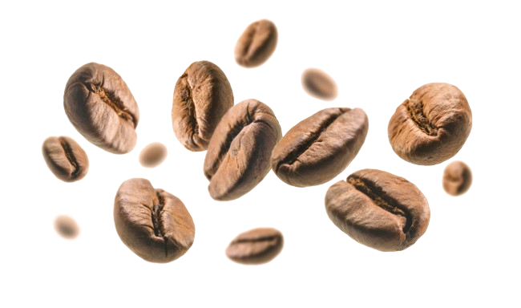

Kahve milattan sonra 800-900 lü yıllarda Etiyopya’da bulunmuştur. Etiyopya bu nedenle kahvenin anavatanı olarak bilinmektedir. Efsaneye göre; Çoban Kaldi keçilerini otlatırken keçileri bu meyveden yemiş ve keçilerde gözle görülür bir enerji ,hareketlilik başlamıştır. Bu durumu fark eden bir keşiş bu yemişi kavurup öğütmüş, kaynatıp suyunu içtiğinde kendisinde de aynı etkiyi yaptığını görmüştür. Sonrasında keşişlerin ayinlerinde uyanık kalmak amacıyla tüketilmeye başlanmıştır.
Kahvenin Türkiye’ye gelişi ise, 1450’li yıllarda gerçekleşmiştir. Türkler kahveyi şuan bilinen en ince öğütme derecesindeki Türk Kahvesi ayarında öğütüp pişirerek tüketmeye başlamışlardır ve bundan sonra Türk Kahvesi Osmanlı’da ve sonrasında Türkiye’de vazgeçilmez bir tutku haline gelmiştir
Kahvenin Türkiye’ye gelişi ise, 1450’li yıllarda gerçekleşmiştir. Türkler kahveyi şuan bilinen en ince öğütme derecesindeki Türk Kahvesi ayarında öğütüp pişirerek tüketmeye başlamışlardır ve bundan sonra Türk Kahvesi Osmanlı’da ve sonrasında Türkiye’de vazgeçilmez bir tutku haline gelmiştir
 Image by artbutenkov on Freepik